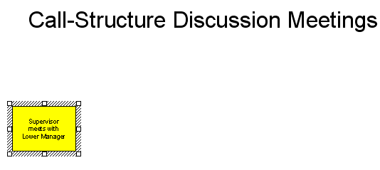
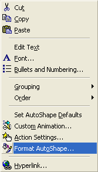

Free
powerpoint
Tutorials
|
Free
powerpoint
Tutorials
|
|
 home home |
Stay at Home and Learn | ||||
Add an Arrow Shape to a PowerPoint Slide |
|||||
|
Flow Charts 1, 2, 3, 4, 5, 6, 7 Tables Charts
Now that we have a rectangle shape on the slide, we can add the arrow. But here's what your slide should look like so far:  Locate the arrow on the Drawing toolbar, and click it once: Now move your mouse over to the right hand side of your rectangle. Hold down your left mouse button and drag. Let go when you have an arrow. Don't worry about the size, or if it's straight or not. But you should have something like this: If you can see white squares (or circles) on your arrow, it means it is selected. If you can't see the white squares or circles, left click your new arrow to select it. Now right click, and from the menu select Format AutoShape:  When you click Format AutoShape, you'll see the following dialogue box appear: Notice the Arrows area at the bottom, You can have a different style and shape for either end of your arrow. Click the End style dropdown list: The Style we've gone for is the first one on the second row. Now click the End size dropdown list: For the size, we've chosen the final one on row 3. Click the Preview button to see what the end of your arrow looks like. If you're happy with it, click the Size tab at the top: Change the Height to 0 cm at the top, and the Width to 1.48 cm. Make sure the Rotation is 0 degrees. Now click OK. When you click OK, your arrow and rectangle may be some distance apart, as in the image below: Make sure your arrow is selected. To move it in to position, you can either drag it with your left mouse button held down. Or hold down the Shift key on your keyboard (just above the CTRL key), and use the left, right, up or down arrow keys to nudge it to the right of the rectangle. If the arrow jumps too far, hold down the CTRL key instead of the Shift key. When you have the correct position, it should look like this: 
In the next part, you'll see how to group and ungroup shapes.
|
||||